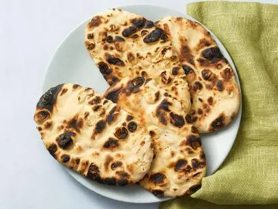

Home
Naan

Description
You will die before you taste anything better than naan. It is the tortilla's great-great-great-great-great-great
grandparent but way better because it is thicker, savorier, and can be used as a pizza, flatbread, or even a
bed.
Utensils and Equipment You May Need
- Big glass
- Big, deep bowl
- Rolling Pin
- Fork
- Clean hands
- Three small bowls
- A tiny bowl
- A dough separator thingy
- A small cast iron pan meant for flatbreads
- A heat safe lid for the pan
- Plate and damp towel or flatbread warmer
Ingredients
- 1 tsp active dry yeast
- 2 tsp sugar
- 3/4 cup warm water (~100 F),, plus more for rolling
- 2 cup AP flour, plus more for rolling
- 1 tsp fine sea salt
- 1/8 tsp baking powder
- 3 tbsp plain Greek yogurt
- 2 tbsp extra-virgin olive oil
- 1 tsp kalonji (optional)
- 1 tsp fennel seeds (optional)
- Melted butter to brush onto naan (to taste)
- Coarse sea salt to sprinkle onto naan (to taste)
Steps
- In big glass, dissolve yeast, 1 tsp sugar, and water. Let sit until frothy, about 10 mins.
- While waiting, sift flour, salt, baking powder, and remaining 1 tsp of sugar into big, deep bowl
- When yeast frothy, add yogurt and olive oil, then stir.
- Pour yogurt mixture into dry ingredients and add seeds (if using), then gently mix with fork.
- When dough about to come together, start to knead it in the bowl with clean hands. It will feel like there
isn't enough flour, but
keep at it. It'll transform into a soft, slightly sticky, and pliable dough.
- When dough is transformed, cover with plastic wrap or damp towel and let sit in warm, draught-free place for
2 to 4 hours.
- Fill the three small bowls and the tiny bowl: one with a little bit of butter (set beside stove), one with a
little bit of
water, and one with a little bit of flour; fill the tiny one with coarse sea salt. Take out the
dough and lay it on a table with the latter two bowls.
- Warm up your pan on high heat. Have a lid nearby.
- Separate the dough into 6 equal portions and lightly roll each one in the bowl of flour to prevent stickage.
- Shape the naan. It should be a teardrop shape, about 8 to 9 inches in length, 4 inches in width, and about
1/4 inch thick.
- Once the pan is smoking, dampen your hands and flip the naan in your hands to dampen it. Then, place it on
the pan gently. Cook for about 1 minute. The dough will bubble. If it doesn't, your naan may be too thick
and you may burn it.
- Flip the naan. The underside should be black and blistered in spots.
- Cover with lid and cook for another 30 seconds to 1 minute.
- Remove from pan, set aside into flatbread warmer or a plate with damp towel on it to wrap them with. Brush
with melted butter and sprinkle coarse sea salt.
- Devour naan or use with soup, curry, or a dip.